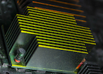
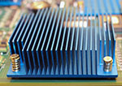

Further expansion of TOWA Europe PDC Packaging Development Center
Press release December 30, 2014
The TOWA Europe Packaging Development Center that started only last February, became in a short time very succesful, therefore a further expansion became necessary. The TOWA Corporation of Japan decided to invest an additional 1.000.000 Euro for more floorspace and extra equipment. The most advanced semiconductor packages, LED lenses, and lenses for solar panels can be molded here, TOWA Europe PDC has in a short time become a leader in development of 3D TSV packages, wafer level and large panel molding and lenses for LED's and automotive electronics The importance of a European Packaging Development Center to assist European companies by developing the best packaging solutions for their innovative products has become quite clear. The European Mobile phone, Automotive, Medical and other industries can now benefit from the extensive packaging know-how TOWA Europe PDC offers them in their expanded facility in Duiven The Netherlands.
About TOWA
The TOWA Corporation of Japan, founded in 1979, is a leading supplier of Molding and Singulation equipment for the
global semiconductor and electronics industries.
The Company develops molding processes and equipment for leadframe, substrate, large panels and wafer level
packaging applications in a wide range of end-user markets including electronics, computer, automotive, industrial,
RFID, LED and solar energy. The transfer molding and compression molding technology, developed by TOWA has
become the leading technology in the fields of Semiconductor & Electronics Packaging and LED lens manufacturing.
Customers are leading semiconductor manufacturers, assembly subcontractors and electronics and industrial
companies.
TOWA Europe B.V. is a fully owned subsidiary of the TOWA Corporation of Japan, located Geograaf 14, 6921 EW Duiven, the Netherlands.
Amkor Technology Licenses Proprietary Copper Pillar Wafer Bump Technology to GLOBALFOUNDRIES
CHANDLER, Ariz.– December 16, 2014 -- Amkor Technology, Inc. (Nasdaq: AMKR), a leading provider of semiconductor assembly and test services, today announced that it has granted GLOBALFOUNDRIES a non-exclusive license to its proprietary copper pillar wafer bump technology. The agreement provides for the transfer of Amkor’s copper pillar wafer bump technology to GLOBALFOUNDRIES and a license under Amkor’s intellectual property to enable GLOBALFOUNDRIES to bump wafers based on this technology.“Technology leadership and innovation are fundamental to Amkor’s success. Since its introduction in 2010, our proprietary copper pillar wafer bump technology has been widely adopted for use in high volume production in many applications, including the smartphone and tablet markets,” said Dr. Choon Heung Lee, Amkor’s executive vice president and chief technology officer. “We are pleased to license our copper pillar wafer bump technology to GLOBALFOUNDRIES, a world class, leading edge foundry.”
“GLOBALFOUNDRIES is committed to providing customers of our leading edge fab technology with fully integrated solutions. Silicon to package integration is a key component of these solutions and we are pleased to have partnered with Amkor, a technology leader for outsourced semiconductor packaging and test services, to expand our wafer bumping services to include capabilities that can further extend our copper pillar bump manufacturing,” said David McCann, Vice President of Packaging R&D at GLOBALFOUNDRIES. “Semiconductor device scaling drives higher density off chip interconnect requirements. Copper pillar bumping is a critical part of bringing leading edge semiconductor devices to market and this capability enhances our growing open ecosystem of manufacturing services and partners.”
Amkor’s copper pillar wafer bump technology enables low profile and small area packaging, which is required for the mobile device market. Copper pillar technology supports 3D fine pitch memory interfaces and is utilized in 2.5D packaging where fine pitch multi-die interconnects can reduce system level costs and shorten time-to-market as compared to SoC platforms. In addition, Amkor’s copper pillar wafer bump technology supports substantial die-to-die bandwidth between memory and logic devices, greatly reduces power consumption in high-performance products, and enables high speed interfaces when applied to analog and RF applications.
About Amkor
Amkor is a leading provider of semiconductor packaging and test services to semiconductor companies and electronics OEMs. More information on Amkor is available from the company's SEC filings and at Amkor's website: www.amkor.com
Contact
Amkor Technology, Inc.
Greg Johnson
Sr. Director, Investor Relations and Corporate Communications
480-786-7594
greg.johnson@amkor.com

Cypress and Spansion to Merge in $4 Billion All-Stock Transaction
Last Updated: 12/01/2014
The combined company will:
• Be a $2 billion global leader in microcontrollers and specialized memories for embedded systems
• Be No. 1 worldwide in NOR Flash memories
• Be No. 1 worldwide in SRAM memories
• Provide significant EPS accretion with $135 million in annual synergies
• Provide ~50% ownership each for Cypress and Spansion shareholders
• Pay an $0.11 per share quarterly dividend to all shareholders
• Have T.J. Rodgers of Cypress as CEO and Ray Bingham of Spansion as non-executive chairman
SAN JOSE, Calif., December 1, 2014—Cypress Semiconductor Corp. (NASDAQ: CY) and Spansion, Inc. (NYSE: CODE) today announced a definitive agreement to merge in an all-stock, tax-free transaction valued at approximately $4 billion. The post-merger company will generate more than $2 billion in revenue annually and create a leading global provider of microcontrollers and specialized memories needed in today’s embedded systems.
“This merger represents the combination of two smart, profitable, passionately entrepreneurial companies that are No. 1 in their respective memory markets and have successfully diversified into embedded processing,” said Rodgers, Cypress’s founding president and CEO. “Our combined company will be a leading provider of embedded MCUs and specialized memories. We will also have extraordinary opportunities for EPS accretion due to the synergy in virtually every area of our enterprises.”
Under the terms of the agreement, Spansion shareholders will receive 2.457 Cypress shares for each Spansion share they own. The shareholders of each company will own approximately 50 percent of the post-merger company. The company will have an eight-person board of directors consisting of four Cypress directors, including T.J. Rodgers and Eric Benhamou, and four Spansion directors, including John Kispert and Ray Bingham, the Spansion chairman, who will serve as the non-executive chairman of the combined company, which will be headquartered in San Jose, California and called Cypress Semiconductor Corporation.
The merger is expected to achieve more than $135 million in cost synergies on an annualized basis within three years and to be accretive to non-GAAP earnings within the first full year after the transaction closes. The combined company will continue to pay $0.11 per share in quarterly dividends to shareholders.
“Bringing together these high-performing organizations creates operating efficiencies and economies of scale, and will deliver maximum value for our shareholders, new opportunities for employees and an improved experience for our customers,” said John Kispert, CEO of Spansion. “With unparalleled expertise, global reach in markets like Japan and market-leading products for automotive, IoT, industrial and communications markets, the new company is well positioned to deliver best-of-breed solutions and execute on our long-term vision of adding value through embedded system-on-chip solutions.”
The closing of the transaction is subject to customary conditions, including approval by Cypress and Spansion stockholders and review by regulators in the U.S., Germany and China. The transaction has been unanimously approved by the boards of directors of both companies. Cypress and Spansion expect the deal to close in the first half of 2015.
Jefferies LLC and Morgan Stanley & Co. LLC served as financial advisors and Fenwick & West and Latham & Watkins acted as legal counsel to Spansion. Qatalyst Partners acted as financial advisor and Wilson Sonsini Goodrich & Rosati acted as legal counsel to Cypress.
Conference Call and Webcast Information Cypress and Spansion will hold a joint conference call and webcast today at 4:30 P.M. ET (1:30 p.m. PT) to discuss this announcement. The conference call may be accessed by dialing 1-517-623-4671 and using the passcode CYPRESS. The live and archived webcast may be accessed at Cypress’s IR website at http://investors.cypress.com/events.cfm and Spansion’s IR website at http://investor.spansion.com.
Conference Call and Webcast Information
Cypress and Spansion will hold a joint conference call and webcast today at 4:30 P.M. ET (1:30 p.m. PT) to discuss this announcement. The conference call may be accessed by dialing 1-517-623-4671 and using the passcode CYPRESS. The live and archived webcast may be accessed at Cypress’s IR website at http://investors.cypress.com/events.cfm and Spansion’s IR website at http://investor.spansion.com.
About Cypress
Cypress delivers high-performance, mixed-signal, programmable solutions that provide customers with rapid time-to-market and exceptional system value. Cypress offerings include the flagship PSoC® 1, PSoC 3, PSoC 4 and PSoC 5 programmable system-on-chip families. Cypress is the world leader in capacitive user interface solutions including CapSense® touch sensing, TrueTouch® touchscreens, and trackpad solutions for notebook PCs and peripherals. Cypress is a world leader in USB controllers, which enhance connectivity and performance in a wide range of consumer and industrial products. Cypress is also the world leader in SRAM and nonvolatile RAM memories. Cypress serves numerous major markets, including consumer, mobile handsets, computation, data communications, automotive, industrial and military. Cypress trades on the NASDAQ Global Select Market under the ticker symbol CY. Visit Cypress online at www.cypress.com.
Cypress and the Cypress logo, PSoC, CapSense and TrueTouch are registered trademarks of Cypress Semiconductor Corporation. All other trademarks are property of their owners.
About Spansion
Spansion (NYSE: CODE) is a global leader in embedded systems solutions. Spansion's flash memory, microcontrollers, analog and mixed-signal products drive the development of faster, intelligent, secure and energy efficient electronics. Spansion is at the heart of electronic systems, connecting, controlling, storing and powering everything from automotive electronics and industrial systems to the highly interactive and immersive consumer devices that are enriching people's daily lives. For more information, visit http://www.spansion.com.
Spansion®, the Spansion logo, and combinations thereof, are trademarks and registered trademarks of Spansion LLC in the United States and other countries. Other names used are for informational purposes only and may be trademarks of their respective owners.
8 GHz Bandwidth Socket for Hybrid Memory Cube
Eagan, MN - December, 2014 - Ironwood Electronics has recently introduced a new high performance BGA socket for Hybrid Memory Cube (1mm pitch, 900 pin BGA). A hybrid memory cube (HMC) is a single package containing either four or eight DRAM die and one logic die, all stacked together using through-silicon via (TSV) technology. The SG-BGA-6412 socket is designed for 31x31mm package size with 30x30 ball array and operates at bandwidths up to 8 GHz with less than 1dB of insertion loss. The sockets are designed to dissipate up to several watts without extra heat sinking and can handle up to 100 watts with custom heat sink. The contact resistance is typically 20 milliohms per pin. The socket connects all pins with 8 GHz bandwidth on all connections. The socket is mounted on the target PCB with no soldering, and uses industry's smallest footprint (only 2.5mm more on each side). The socket is constructed with shoulder screw and swivel lid which incorporates a quick insertion method so that IC's can be changed out quickly.
The SG-BGA-6412 socket is constructed with high performance and low inductance elastomer contactor. The temperature range is -35 C to +100 C. The pin self inductance is 0.15 nH and mutual inductance of 0.025 nH. Capacitance to ground is 0.01 pF. Current capacity is 2 amps per pin. Works with IC's such as Micron's HMC in BGA package with 30x30 array and 1mm pitch.
Pricing for the SG-BGA-6412 is $896 at qty 1; with reduced pricing available depending on quantity required.
Sue Huang
1335 Eagandale Court
Eagan, MN 55121
Tel: 952-229-8200 or (800) 404-0204
Fax: 952-229-8201
info@ironwoodelectronics.com
www.ironwoodelectronics.com
Push-pin heat sinks offer more than 100,000 configurations
Norwood, MA -- With 108,000 possible configurations, Advanced Thermal Solutions, Inc. (ATS) now provides the widest choice of push pin-mounted heat sinks for cooling BGAs and other hot components.More than 200 ATS heat sinks are available with convenient push pin mounting. The lightweight aluminum heat sinks include straight fin, cross-cut, and ATS maxiFLOW spread fin geometries. More than 100 fine- pitch heat sinks are available for effective cooling in high velocity airflows. For low airflow conditions, another 100 sinks are available with coarse-pitch fins and wide fin spacing. The full range of heat sinks is sized for cooling components in lengths from 25-70 mm.
 All ATS push pin heat sinks feature pre-drilled holes for secure mounting to PCBs in industry standard locations. To meet application needs, push pins are available in both durable plastic and brass. Plastic pins are lighter and non-electrically conductive. Metal pins have added strength and durability for more rugged applications or thicker devices. All push pins feature flexible barbs that lock securely in PCB holes.
Compression springs on the push pins add the required forces for firm attachment and effective heat transfer. These springs come in 21 sizes to provide the precise forces needed to optimize heat sink performance on different PCBs.
 ATS push pin heat sinks are pre-assembled with a phase-change thermal interface material to increase heat transfer. Double-sided thermal tape and no TIM options are available for application specific requirements.
All ATS push pin heat sinks are conveniently ordered with no minimum from Digi-Key, the exclusive global distributor of these heat sinks and many other ATS thermal management products. The ATS website, Qats.com, also provides a gateway to ordering each push pin sink model from Digi-Key.
More information on push pin heat sinks is found on Qats.com and Digi-Key.com, or by calling Advanced Thermal Solutions at 781-769-2800.